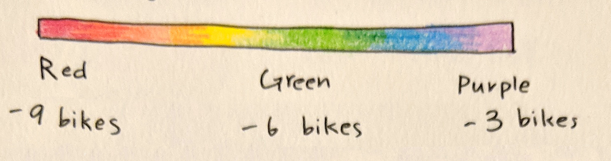
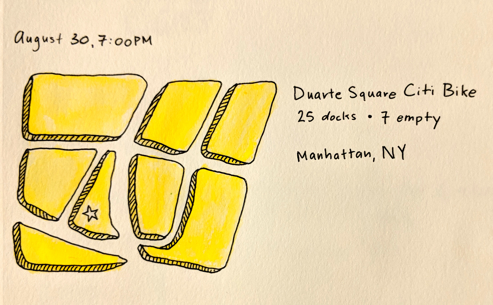
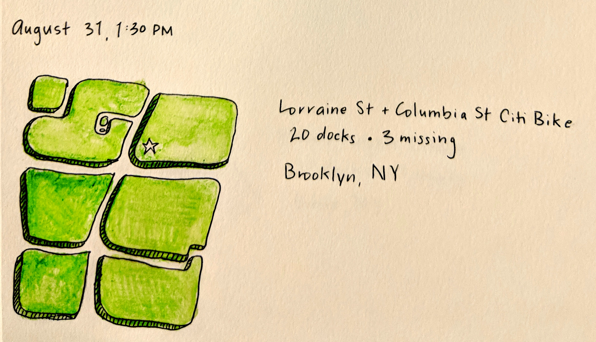
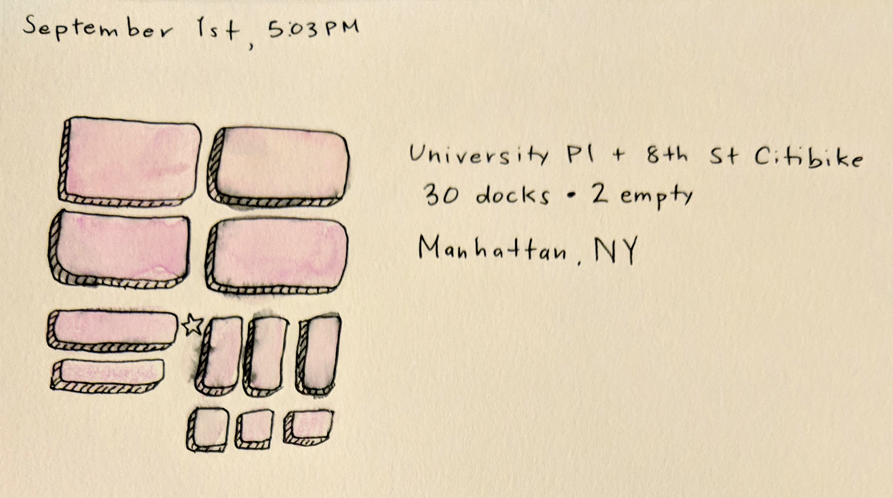
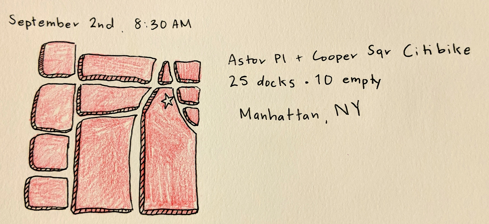
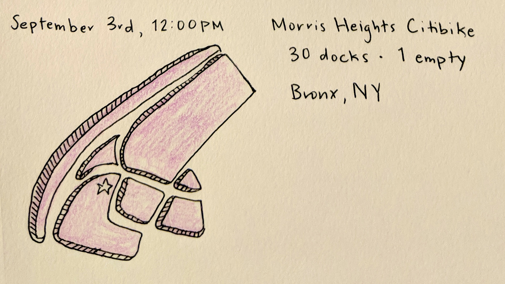

For five consecutive days, I randomely picked and illustrated a Citi Bike station, and colored the illustration based off the number of bikes avaliable at the station upon arrival.
     
Citi bike is a bikeshare service in New York City that's open for the public and citibike members to use. Reliability of public transportation in New York is something I wanted to explore, and Citibike was something I haven't researched. Location, number of functioning bikes, and time of day were key in the reliability of the service.
The repeated action and routine of doing this study deomstrated the effectiveness of repetition. The repeated and consecutive action of observing the same subject daily gave me more oppertunities to make new observations and catch details I could've missed the day before.